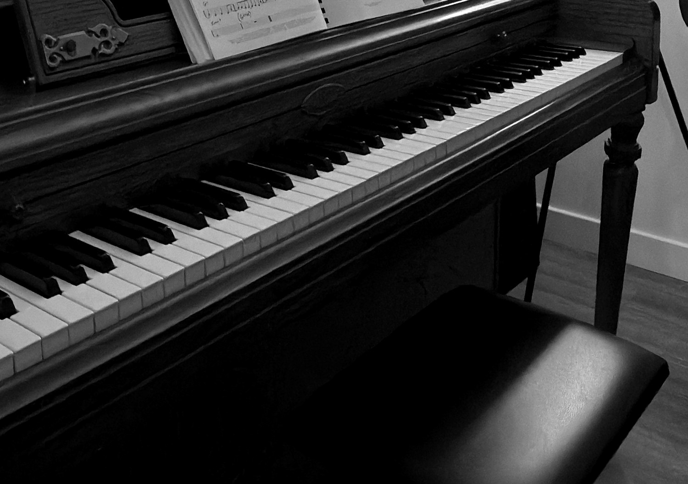

Is it too late
to learn
piano?
Short answer: no.
Swipe →
01 / 03
Adults learn
differently,
not worse.
You bring focus, patience and a lifetime of listening to music. That counts for more than you’d think.
02 / 03
You don’t need
“talent.”
Progress comes from steady practice and good guidance, not a gift you’re born with.
03 / 03
You’re not
starting
from zero.
Played as a kid? It comes back faster than you think. Never played? Your ear already knows more than you realize.
Start where
you are.
Private lessons for adults, from first notes to coming back to the keys. Online or in Echo Park.
mowjmusicacademy.com